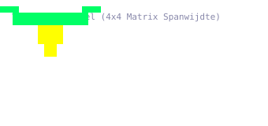

c-phoenix/animations)Welkom in het centrale visuele archief van de Phoenix Arcade
Game (c-phoenix). Deze map beantwoordt twee verschillende
vragen: waaruit elk object bestaat, en
waarheen het beweegt.
De bron van waarheid is, in deze volgorde: Z80 ASM/ROM → C-port → geannoteerde analyse → deze visualisaties. De SVG's maken ROM- en C-data inzichtelijk, maar vervangen die bron niet. Een conclusie zonder koppeling naar ASM, ROM of C-code is een interpretatie die nog gecontroleerd moet worden.
Drie bewegingssoorten uit het spel tegelijk — een alien-zwenking, een vogel-duikbom en de daling van het moederschip — allemaal getekend uit de vectoren die in de ROM staan:
Bronbestand: 00_overview_flight_patterns.svg.
Een Phoenix-vogel is niet één sprite. Hij komt uit het ei, groeit, valt aan en explodeert — zes onderscheiden animatiefases, elk gereconstrueerd uit de graphics-ROM:
| Ei komt uit | Kleine vogel wiekt | Volgroeide spanwijdte |
|---|---|---|
 |
 |
 |
| Duikaanval | Explosie en bonus | Daling moederschip |
 |
 |
 |
📄 bird-animations.md —
alle zes fases in detail, met de RAM-slots en ROM-routines erachter.
Phoenix heeft geen sprite-engine. Elk object op het scherm is een handvol 8×8-karakters die naar het schermgeheugen worden geschreven, en het karakternummer bepaalt zélf de kleur — bit 5-7 kiezen een van de acht kleurgroepen in de PROM-tabel. Daarom lijkt elk blok van 32 karakters op één familie: letters, cijfers, het spelerschip, de vogels, explosies, het schild.
Er zijn twee onafhankelijke sets van 256 karakters. De voorgrondset bevat de speler, de aliens, de explosies en het schild; de achtergrondset bevat het sterrenveld, de planeet, de vogels en het moederschip.
Objectmaten liggen niet vast. Een kleine familie
drawNxN-routines schrijft twee karakters onder elkaar
in een kolom en stapt dan zijwaarts, en voor sommige objecten kiest
sprite_rendering.c tijdens runtime 1x1,
2x1, 1x2 of 2x2 op basis van het
control-byte — dezelfde tabel kan dus verschillende vormen opleveren,
afhankelijk van wat het object doet.
📄 animation-sequences.md
— de volledige karakterset, elke spritesequentie frame voor frame met de
karaktercodes, de bewegende versies, en de C-routine die elk daarvan
tekent.
Elke alienformatie en vogelduik volgt een vast pad, in de ROM opgeslagen als een korte lijst bewegingsvectoren. Deze map telt 130 SVG-bestanden; de 78 patroonanimaties hieronder zijn er één per ROM-gedefinieerd patroon, gegroepeerd naar het subsysteem dat ze gebruikt:
$1000–$13FF) — patronen
01–18, geordende formatiegolven in alienwave 1 & 3$2C00–$2FFF) — patronen
19–36, breakout-aliens en moederschip-escorts$3F00–$3F7F) —
16 gedragsscripts$3DC0–$3DDF) — 16 start- en duikcoördinaten📄 animation-trajectory.md
— elk patroon getoond en toegelicht, met de ROM-clusterindeling, de
RAM-datastructuren ($4000-$4BFF) en de vectorengine
erachter.
📐 animation-trajectory-detailed.md
— stap-voor-stap coördinatentabellen per patroon: stapnummer,
vectorindex, dX, dY, cumulatief X/Y.
Elk C-bronbestand in dit subsysteem heeft een geannoteerde
tegenhanger in ../../c-annotated/nl/: